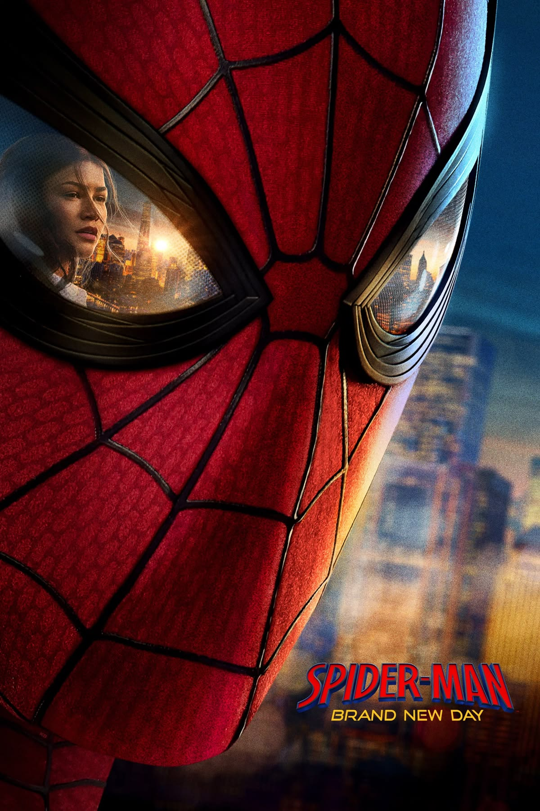

História
Uma narrativa bem construída permite que o público acompanhe os personagens e compreenda suas escolhas.
Conheça o filme e sua experiência cinematográfica
Homem-Aranha: Um Novo Dia é o centro deste projeto. Nesta página, o objetivo é reunir os elementos cinematográficos e apresentar a experiência do filme de maneira organizada.
Enquanto as páginas anteriores analisaram a história, Peter Parker, suas mudanças, conflitos e mensagens, aqui o foco está no próprio filme como produção cinematográfica.

A imagem acima será adicionada posteriormente à pasta img do projeto.
A música e os efeitos sonoros possuem um papel importante na construção da atmosfera de uma produção cinematográfica.
O arquivo abaixo será utilizado como demonstração de áudio local no projeto:
Arquivo de áudio local do projeto.
Para atender ao requisito de multimídia do projeto, será utilizado um vídeo armazenado localmente na pasta video.
Vídeo local utilizado exclusivamente para fins acadêmicos neste projeto.
| Elemento | Função |
|---|---|
| Roteiro | Define a estrutura da narrativa e os diálogos. |
| Direção | Orienta a construção das cenas e da narrativa. |
| Atuação | Dá vida aos personagens. |
| Fotografia | Contribui para a composição visual das cenas. |
| Trilha sonora | Ajuda a construir emoções e atmosferas. |
| Edição | Organiza imagens e sons para construir o ritmo da narrativa. |
Uma narrativa bem construída permite que o público acompanhe os personagens e compreenda suas escolhas.
Música, atuação, fotografia e roteiro podem trabalhar juntos para provocar diferentes emoções no espectador.
Além do entretenimento, uma obra cinematográfica também pode apresentar ideias e provocar reflexões.
Informações sobre uma produção cinematográfica devem ser verificadas em fontes confiáveis.
O termo UCM é utilizado para identificar o universo compartilhado de produções da Marvel Studios.
Para uma pesquisa acadêmica, consulte fontes oficiais e materiais de divulgação da produção.
O uso de arquivos locais demonstra que o projeto consegue incorporar diferentes tipos de conteúdo diretamente a partir de suas próprias pastas, sem depender exclusivamente de conteúdos externos.
O atributo
controls
permite que o navegador apresente controles para
reproduzir, pausar e controlar a mídia.